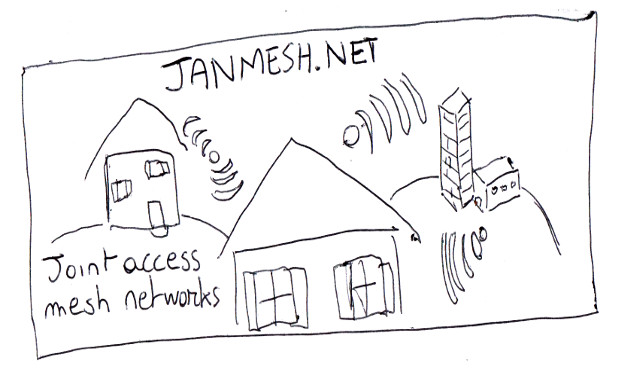
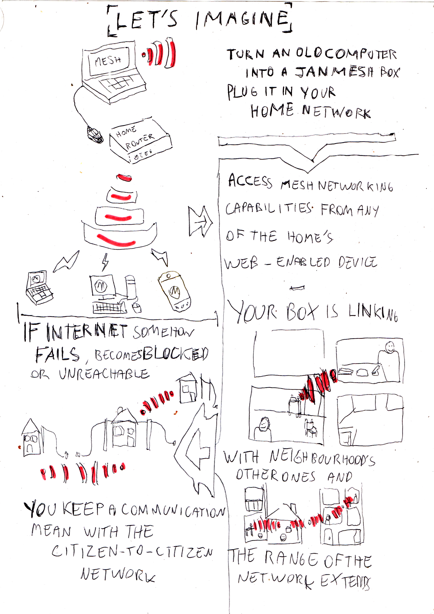
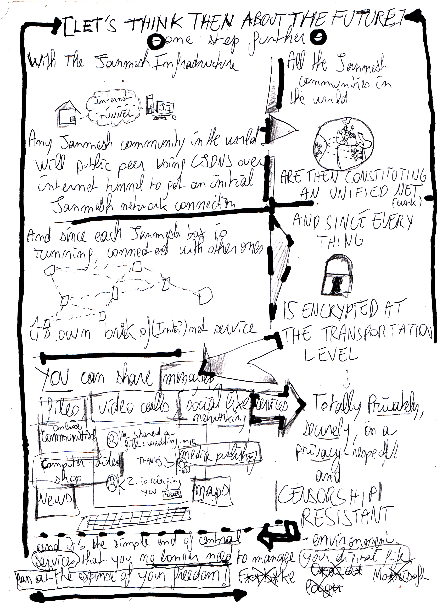

Need support? To help people setting up mesh stations, Janmesh.net now provides a full commercial grade-like support
* in a name-your⁻price manner, covering all the steps of a neighbour-to-neighbour network creation, from OS installation to MCPae configuration and update, including CoOoOw stack deployment. Send support inquiries to
janmesh@janmesh.net*Support requests are generally processed in less than two business days

Janmesh.net
Joint Access Mesh Networks
What is Janmesh? What is MCPae ? What is a Janmesh box?
Janmesh (SSID http://janmesh.net) is a citizen-to-citizen networking initiative, running nodes with an active CoOoOW stack (cjdns over OLSRD over open WiFi), that provide an alternative communication medium resistant to severely communication network-disruptive situations.
MCPae, previously nammed Jasede, is a project of communication software suite to be used over Janmesh networks to ensure neighbour-neighbour networking communication without requiring a functionnal Internet link.
A Janmesh box is a computing device (typically an old laptop) running as a Janmesh network node, connected to neighbourhood's nodes, and serving mesh connectivity and services toward the home LAN network
NEW Volunteer translators needed The project is now easier to translate providing you have basic knowledge of Git (web-based gateway) such as fork, edit/create file, and pull request, and of basis HTML code formating of documents. We especially neeed translation of the ./doc main tutorials section.
Please go to
the Github repository to get started.
The donation gauge
There's many ways to support the project ; besides being a volunteer, coding, designing, or just testing the whole thing at home, we also welcome old hardware (computers even out of order and even very old wifi/networking gear especially) and you can naturally donate some money as well. Please contact us in any case.
Objective
X1----------2-----------------(...)----------3---(...)----4
EUR35 EUR150 EUR1300 EUR12500
Amount
We're currently at EUR 0. Objective 1 is funded at 0%.
- Objective 1: provide network infrastructure to allow any janmesher to peer with a hub-style node that will serve as MCPae initial peer, so then any newscomer to the network can find other janmesher even if there is no one in the area (thanks to internet tunelling)
- Objective 2: Buy one ARM-based board to study the use of these devices for Janmeshing purposes and then to provide documentation and tutorials for people to build Janmesh boxes for a reasonable price
- Objective 3: To constitute a company that would market prebuild Janmesh boxes
- Objective 4: To pay one staff people almost for a full time position at the minimal legal salary to code MCPae's core feature such as video calls, messaging, file sharing, social networking
We are absolutely ok with broken-screen or battery-failing old laptops! Please spread the word ; don't trash them, send them to us ; we can turn them into meshboxes and they can be very useful
How is the Janmesh Project doing?
We already wrote a full documentation to get a working CoOoOW stack with a basic Ubuntu Linux computer. The network is up and runing at a local scale
-Read more-.
We plan to develop in the forseable future the MCPae communication suite, with, firstly, messaging including file attachements. For now the software is at the stage of operating a peer-to-peer network between active and connected installs.
Future plans for the project include
- Deploying the necessary infrastructure, dubbed Janmesh infrastructure, to provide a "hub-like" public cjdns peer to which any distant Janmesher communities could connect to using internet tunelling, and then add as an initial MCPae peer to get potential connection with any Janmesh network station in the world, forming an unified network.
- Experiment with these nifty ARM based inexpensive boards to allow people to build say a couple of Janmesh boxes to start sharing messages or files privately and securely with their neighbour for much less than the cost of their smartphone biannual renewing or their yearly internet provider fee. Remember, once it's set up, it's here for good and don't cost more than the electrical consumption of the device... For decades.
- MCPae mailing service ; which involve account management, PKI infrastructure for trusted person-to-person authenticated communication, messaging with file attachement ; first.
- English translation of the tutorials are on their way too
- initial MCPae public release should come also very quickly
And now learn more about citizen-to-citizen networking future...

The connectivity to the mesh network can ben tunneled through a long-range directionnal radio link to connect distant communities
Or tunneled over Internet -or any other network medium- to rely distant places of the world
Get started or read more:

Frequently asked questions
What can I do with a Janmesh in my neighbourhood already? Do I have to wait for further MCPae developments to make something useful?
In short, you don't have to wait. MCPae is only a mean to autodiscover other MCPae instances and then to provide end-user services without knowing the IP address of a particular node. Also, since it's a web-based software, it is useful in order to access these services on a wide variety of devices in your home LAN.
But actually if you have physical or remote access to your Janmesh node station, you can just use out-of-the-box any network services such as SMTP mails, HTTP/FTP file transfer or just any other common protocol, with the requirement that you'll have to know the IPv6 adress of the machine you'll want to talk to.
Is Janmesh using only radio link? Can I use some other kind of networking medium?
You can use any networking medium to setup an operate your CoOoOw stacks. You can use an ethernet cable to connect with a close neighbour, as well as associated BPL interfaces to connect with other homes using the same electrical power transformator than you (typically, your block and nearest ones).